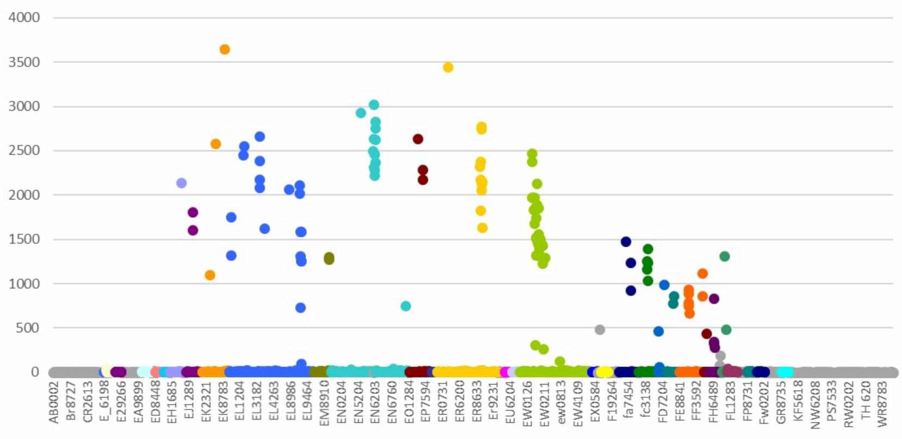

Batch Clusters
home | Booster Warnings by Month | Moderna | Pfizer | Janssen | Moderna (outside USA) | Pfizer (outside USA) | Janssen (outside USA) | Severe | Symptom | Treatment | Children | Clusters | All or Nothing | Time till onset | Gender | Geography | States | Causality | Japan | Sweden | Video Library | Case Reports | Lot Sizes | Lot Expiry Dates | Whistle Blowers | Data Cleaning | Background | Download Source Code | Donate
If this site is slow loading that's because over 1 million people are accessing it right now. Please use auxillary site HowBadisMyBatch.com which has been set up to cope with this overload. Thankyou.
Batch codes appear to represent different levels of toxicity, suggesting that the batches have been labelled with batch codes for the purpose of distinguishing one toxic level from another.
Pfizer Batches
When Pfizer batch codes are arranged alpha-numerically along the x-axis, the following pattern appears -

As you can see batches cluster alphanumerically into specific ranges of toxicity. And these ranges decrease linearly as one ascends the alphabet such that -
Whether this is deliberate or not is open to debate; it certainly looks deliberate - and it is the common practice of scientists to carefully label each experimental condition inorder to monitor and record the effects. It looks as if batches of varying toxicity have been carefully labelled and tested upon the public - producing different ranges of adverse reactions.
See also -
Practical Implications
The practical implication of this finding is that you can estimate the degree of toxicity of a vaccine batch by looking at its code. Batch codes lower in the alphabet are associated with higher numbers of adverse reactions. In particular, doctors and nurses should be cognisent of the above list, and wary of the earlier series especially
Moderna Batches
The results for Moderna batches are very similar - as one progresses through the alphabet, the number of adverse reactions for batches decreases.
Toxicity (as measured by number of adverse reactions, death, disability or hospitalisation) appears to vary stepwise and linearly with the alphabet letter in the centre of the batch code
The First 3 Digits of a Moderna Batch Code
A moderna batch code consists of a 3-digit number followed by an alphabet letter, then a designation code of either 20A or 21A
The three-digit number at the start of a Moderna batch code most probably indicate the order in which the batch was issued - i.e. its temporal sequence.
The Last 3 Characters of a Moderna Batch Code
20A
The last three characters of a Moderna batch code are usually either 20A or 21A. When all the Moderna batches are ranked in order of number of adverse reactions, it is found that the top 26 slots (the batches associated with most adverse reactions) are all batches ending in 20A. All of the Moderna batches associated with over 1780 adverse reactions end in 20A.
It is also worth noting that batches ending in 20A only have alphabet letters J, K, L, M
It is also apparent from the graph above, that the J, K, L and M batches have a greater spread (produce a more variable response) than A, B, C, D, E, F batches.
Taking into account the higher toxicity, the greater spread and the use of a different alphabet sequence, I would say that these batches probably contained a different formulation - different ingredients rather than just a different concentration.
In this way, the J, K, L and M batches of Moderna (all ending in 20A) are similar to the EJ, EK, EL, and EM batches for Pfizer. Notice the greater spread for these Pfizer batches. It looks as if Pfizer too was trying a different formulation here.
21A
The remaining Moderna batches end in the three characters 21A, and these batches contain the alphabet letters A, B, C, D, E, F, G, H. The adverse reactions for these batches are far more tighly clustered into specific toxic ranges - just as with Pfizer's EN, ER, EO, EW etc series.
The Moderna batches ending in 21A are completely absent in the top most toxic 26 batches, but predominate in the lower toxicity ranges. The very linear stepwise decrease in adverse reactions whilst maintaining a constant spread, suggests that dosage (concentration of active ingredients) is being varied in steps.
Conclusion
So, besides using the batch search engine available on this site, one can also get an idea of toxicity by looking at the batch code, and seeing if it falls into one of the above alphabetic series. Lower in the alphabet is an indication of severity - higher, less so.
In the case of Moderna, one can also access potential risk of adverse reactions by looking at the last 3 letters - either 20A or 21A - 20A appearing to be a greater risk.